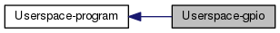

|
Zynq-7000 Driver Pack
2.0
C implementation of some Driver for Zynq-7000 Family
|
|
Zynq-7000 Driver Pack
2.0
C implementation of some Driver for Zynq-7000 Family
|
Programma di esempio per l'interfacciamento con una periferica myGPIO attraverso un driver kernel. Continua...
|  |
Strutture dati | |
| struct | param_t |
| La struttura raccoglie tutti i parametri di esecuzione del programma. Continua... | |
Definizioni | |
| #define | MODE_OFFSET myGPIO_MODE_OFFSET |
| #define | WRITE_OFFSET myGPIO_WRITE_OFFSET |
| #define | READ_OFFSET myGPIO_READ_OFFSET |
Funzioni | |
| void | howto (void) |
| Stampa un messaggio che fornisce indicazioni sull'utilizzo del programma. Continua... | |
| int | parse_args (int argc, char **argv, param_t *param) |
| Effettua il parsing dei parametri passati al programma. Continua... | |
| void | gpio_op (param_t *param) |
| Effettua operazioni su un device. Continua... | |
| int | main (int argc, char **argv) |
Programma di esempio per l'interfacciamento con una periferica myGPIO attraverso un driver kernel.
In questo specifico esempio l'interfacciamento avviene da user-space, interagendo attraverso il driver myGPIOK.
| #define MODE_OFFSET myGPIO_MODE_OFFSET |
| #define READ_OFFSET myGPIO_READ_OFFSET |
| #define WRITE_OFFSET myGPIO_WRITE_OFFSET |
| void gpio_op | ( | param_t * | param | ) |
Effettua operazioni su un device.
| [in] | param | puntatore a struttura param_t, contiene i vari parametri di esecuzione del programma. |
La funzione viene invocata dopo che sia stato eseguito il parsing dei parametri passati al programma quando esso viene invocato. E' stata scritta per funzionare sia con il GPIO Xilinx che con il GPIO custom myGPIO. E' possibile utilizzare il primo definendo la macro XIL_GPIO. Effettua, sul device, le operazioni impostate, in accordo con i parametri passati al programma alla sua invocazione.
Nel caso un cui si usi un driver ad-hoc, e' possibile usare le funzioni read() e write() per interagire con il device, leggendo il valore dei registri o scrivendolo. Il driver myGPIOK mette a disposizione anche la funzione seek() che permette di scegliere quale registro leggere o scrivere.
Per impostare la modalita' di funzionamento e' necessario scrivere sul registro MODE. L'offset di tale registro e' determinato in base al particolare device che si sta' utilizzando. Dopo aver spostato la "testina di scrittura" sul registro MODE usando la funzione seek(), viene effettuata la scrittura su di esso usando la funzione write(). E' possibile, definendo la macro USE_PWRITE, usare la funzione pwrite(), che combina le due operazioni.
Per impostare il valore dei pin del device e' necessario scrivere sul registro WRITE. L'offset di tale registro e' determinato in base al particolare device che si sta' utilizzando. Dopo aver spostato la "testina di scrittura" sul registro WRITE usando la funzione seek(), viene effettuata la scrittura su di esso usando la funzione write(). E' possibile, definendo la macro USE_PWRITE, usare la funzione pwrite(), che combina le due operazioni.
La lettura dei pin del device avviene mediante la chiamata alla funzione read(), dopo aver spostato la "testina di lettura" sul registro READ. L'offset di tale registro, come nei due casi precedenti, viene determinato in base al particolare device che si sta usando. E' possibile, definendo la macro USE_PREAD, usare la funzione pread(), che combina le operazioni di seek() e read(). Il driver myGPIOK implementa un meccanismo di lettura bloccante: qualora non ci siano dati disponibili, il processo che chiama read() viene sospeso e messo in attesa che i dati siano disponibili. Quando arriva una interruzione dal device, il driver myGPIOK lo gestisce e risveglia i processi che erano stati messi precedentemente in attesa. Si legga la documentazione del driver myGPIOK per i dettagli.
| void howto | ( | void | ) |
Stampa un messaggio che fornisce indicazioni sull'utilizzo del programma.
| int main | ( | int | argc, |
| char ** | argv | ||
| ) |
| int parse_args | ( | int | argc, |
| char ** | argv, | ||
| param_t * | param | ||
| ) |
Effettua il parsing dei parametri passati al programma.
| [in] | argc | |
| [in] | argv | |
| [out] | param | puntatore a struttura param_t, conterra' i vari parametri di esecuzione del programma. |
| 0 | se il parsing ha successo |
| -1 | se si verifica un errore |
Il parsing viene effettuato usando la funzione getopt().
Essa prende in input i parametri argc ed argv passati alla funzione main() quando il programma viene invocato. Quando una delle stringhe che compongono argv comincia con il carattere '-', getopt() la considera una opzione. Il carattere immediatamente successivo il '-' identifica la particolare opzione. La funzione puo' essere chiamata ripetutamente, fino a quando non restituisce -1, ad indicare che sono stati analizzati tutti i parametri passati al programma. Quando getopt() trova un'opzione, restituisce quel carattere ed aggiorna la variabile globale optind, che punta al prossimo parametro contenuto in argv. La stringa optstring indica quali sono le opzioni considerate. Se una opzione e' seguita da ':' vuol dire che essa e' seguita da un argomento. Tale argomento puo' essere ottenuto mediante la variabile globale optarg.
La funzione riconosce i parametri:
Se non viene specificato il device myGPIOK col quale interagire e' impossibile continuare. Per questo motivo, in questo caso, la funzione restituisce -1, per cui il programma viene terminato.
 1.8.8
1.8.8